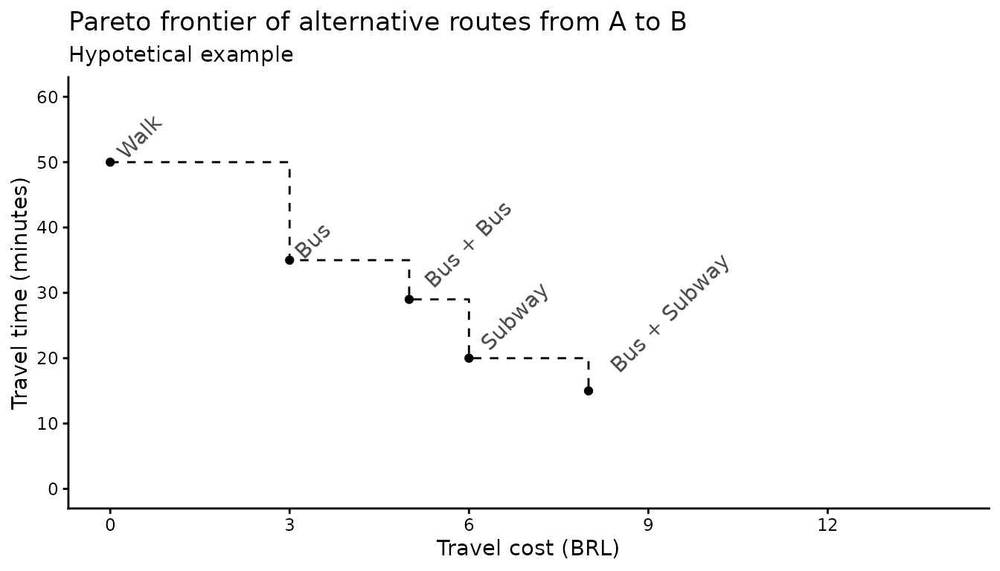
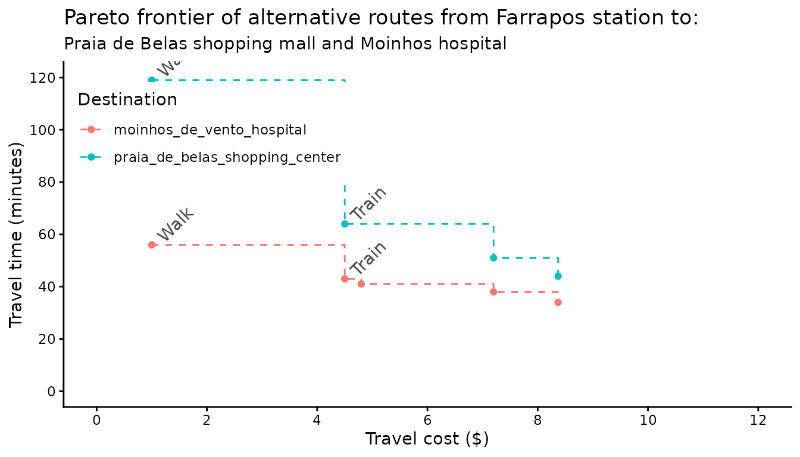

../vignettes/pareto_frontier.Rmd
pareto_frontier.RmdAbstract
This vignette shows how to use thepareto_frontier() function to examine the trade-offs between travel time and monetary cost in travel time matrices in r5r.
In most cases, transport routing models find either the fastest or the lowest-cost routes that connect places in a given transport network. Sometimes, though, we might want a more sophisticated analysis that considers both the time and monetary costs that public transport passengers have to face. The problem here is that simultaneously accounting for both time and monetary costs is a major challenge for routing models because of the trade-offs between the objectives of minimizing trip duration and cost (ref ‘Getting Charlie off the MTA’).
To address this problem, r5r has a function called pareto_frontier(), which calculates the most efficient route possibilities between origin destination pairs considering multiple combinations of travel time and monetary costs. This vignette uses a reproducible example to demonstrate how to use pareto_frontier() and interpret its results.
pareto_frontier means.
Imagine a hypothetical journey from A to B. There are multiple route alternatives between this origin and destination with varying combinations of travel time and cost (figure below).
This figure illustrates the Pareto frontier of alternative routes from A to B. In other words, it shows the most optimal set of route alternatives between A and B. There are certainly other route options, but there is no other option that is both faster and cheaper at the same time.

This kind of abstraction allows us to have a better grasp of the trade-offs between travel time and monetary cost passengers face when using public transport. It also allows us to calculate cumulative-opportunity accessibility metrics with cutoffs for both time and cost (e.g. the number of jobs reachable from a given origin with limits of 40 minutes and $5) (ref paper by Matt and Anson).
Let’s see a couple concrete examples showing how r5r can calculate the Pareto frontier for multiple origins.
pareto_frontier().
setup_r5()
First, let’s build the network and create the routing inputs. In this example we’ll be using the a sample data set for the city of Porto Alegre (Brazil) included in r5r.
# increase Java memory
options(java.parameters = "-Xmx2G")
# load libraries
library(r5r)
library(sf)
library(data.table)
library(ggplot2)
# build a routable transport network with r5r
data_path <- system.file("extdata/poa", package = "r5r")
r5r_core <- setup_r5(data_path)
# routing inputs
mode <- c('walk', 'transit')
max_walk_dist <- 1000 # meters
max_trip_duration <- 90 # minutes
# load origin/destination points of interest
points <- fread(file.path(data_path, "poa_points_of_interest.csv"))Now we need to set what are the fare rules of our public transport system. These rules will be used by R5 to calculate the monetary cost of alternative routes. In the case of Porto Alegre, the fare rules are as follows: * Each bus ticket costs R$ 4.80. * Riding a second bus adds $ 2.40 to the total cost. Subsequent bus rides cost the full ticket price of $ 4.80. * Each train ticket costs $ 4.50. Once a passenger enters a train station, she can take an unlimited amount of train trips as long as she doesn’t leave a station. * The integrated fare between bus and train has a 10% discount, which totals $ 8.37.
We can create list object with these fare rules with the support of the setup_fare_structure() function as shown in the code below. A detailed explanation of how to use the fare structure of 5r5 can be found in (this other vignette).
# create basic fare structure
fare_structure <- setup_fare_structure(r5r_core,
base_fare = 4.8,
by = "MODE")
# update the cost of bus and train fares
fare_structure$fares_per_mode[, fare := fcase(mode == "BUS", 4.80,
mode == "RAIL", 4.50)]
# update the cost of tranfers
fare_structure$fares_per_transfer[, fare := fcase(first_leg == "BUS" & second_leg == "BUS", 7.2,
first_leg != second_leg, 8.37)]
# update transfer_time_allowance to 60 minutes
fare_structure$transfer_time_allowance <- 60
fare_structure$fares_per_mode[mode == "RAIL", unlimited_transfers := TRUE]
fare_structure$fares_per_mode[mode == "RAIL", allow_same_route_transfer := TRUE]For convenience, we can save these fare rules as a zip file and load again for a future application.
# save fare rules to temp file
temp_fares <- tempfile(pattern = "fares_poa", fileext = ".zip")
r5r::write_fare_structure(fare_structure, file_path = temp_fares)
fare_structure <- r5r::read_fare_structure(file.path(data_path, "fares/fares_poa.zip"))pareto_frontier().
In this example, we calculate the Pareto frontier from all origins to all destinations considering multiple cutoffs of monetary costs: - $1, which would only allow for walking trips - $4.5, which would only allow for rail trips - $4.8, which would allow for a single bus trip - $7.20, which would allow for bus + bus - $8.37, which would allow for walking walking + bus + rail
departure_datetime <- as.POSIXct("13-05-2019 14:00:00", format = "%d-%m-%Y %H:%M:%S")
pf <- pareto_frontier(r5r_core,
origins = points,
destinations = points,
mode = c("WALK", "TRANSIT"),
departure_datetime = departure_datetime,
fare_structure = fare_structure,
monetary_cost_cutoffs = c(1, 4.5, 4.8, 7.20, 8.37),
progress = TRUE
)
#> Loading required namespace: testthat
#> Preparing final output... DONE!
head(pf)
#> from_id to_id percentile travel_time monetary_cost
#> 1: public_market public_market 50 0 1.0
#> 2: public_market bus_central_station 50 23 1.0
#> 3: public_market bus_central_station 50 18 4.5
#> 4: public_market bus_central_station 50 13 4.8
#> 5: public_market gasometer_museum 50 29 1.0
#> 6: public_market gasometer_museum 50 15 4.8For the sake of illustration, let’s check the most optimum route alternatives from the Farrapos train station to (a) the Praia de Belas shopping mall and (b) the Moinhos hospital.
One cannot make a faster trip without increasing costs, one cannot make a cheaper trip without increasing travel time.
#> Warning: Removed 4 rows containing missing values (geom_text).